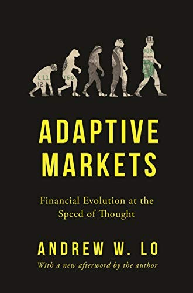

安德鲁·罗（Andrew W. Lo）是麻省理工学院斯隆管理学院金融学教授，也是MIT计算机科学与人工智能实验室的成员。他长期从事金融理论与量化研究，所提出的"适应性市场假说"（Adaptive Markets Hypothesis）是对尤金·法玛（Eugene Fama）有效市场假说的系统性修正与扩展。《适应性市场》出版于2017年，由普林斯顿大学出版社发行，是罗历经二十余年学术积累后向广大读者呈现的一部综合性著作，也是近年来金融学领域最受瞩目的理论创新之一。
有效市场假说长期主导学界，认为市场价格随时充分反映一切可获得的信息，超额收益无法持续获得。然而，金融市场历史上屡屡出现理性模型无法解释的泡沫、崩溃与非理性行为。罗的核心主张是：金融市场并非物理系统，而更像生态系统——市场参与者通过试错、学习与适应来应对不断变化的环境，这一过程遵循进化而非均衡的逻辑。在这个框架下，市场效率不是一种固定状态，而是一个随竞争环境、参与者构成和外部冲击动态演变的过程。
本书的知识跨度极为宏阔，罗从神经科学、进化生物学、心理学、人工智能等多个学科汲取洞见，构建起一幅金融行为的完整图景。他解释了为什么投资者在市场稳定时趋于理性，在市场动荡时却本能地做出情绪化决策；为什么某些交易策略在特定时期有效而在其他时期失灵；以及为什么系统性金融危机不是偶发的"黑天鹅"，而是市场生态演化过程中几乎不可避免的结果。书中对2008年金融危机的解读尤为深刻，将其纳入进化失配（evolutionary mismatch）的分析框架，令人耳目一新。
《金融时报》将本书列为年度最佳商业书籍之一，称其"以进化生物学重新定义了我们对金融市场的理解"。前美联储主席本·伯南克（Ben Bernanke）赞誉本书"博学、原创，且富于启发性"（"Erudite, original, and thought-provoking"）。对于投资者、政策制定者以及任何希望真正理解市场运作机制的读者而言，《适应性市场》提供了一个比有效市场假说更贴近现实的分析视角，是理解人类决策与市场演化如何相互塑造的重要读本。